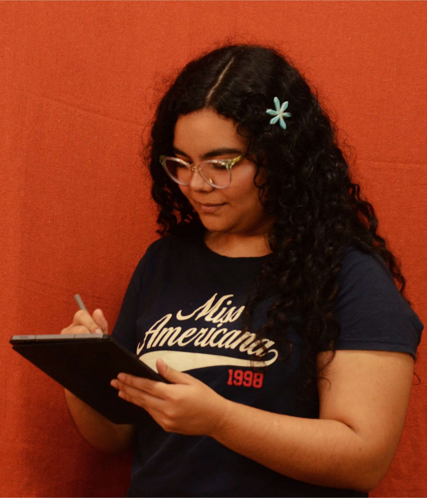
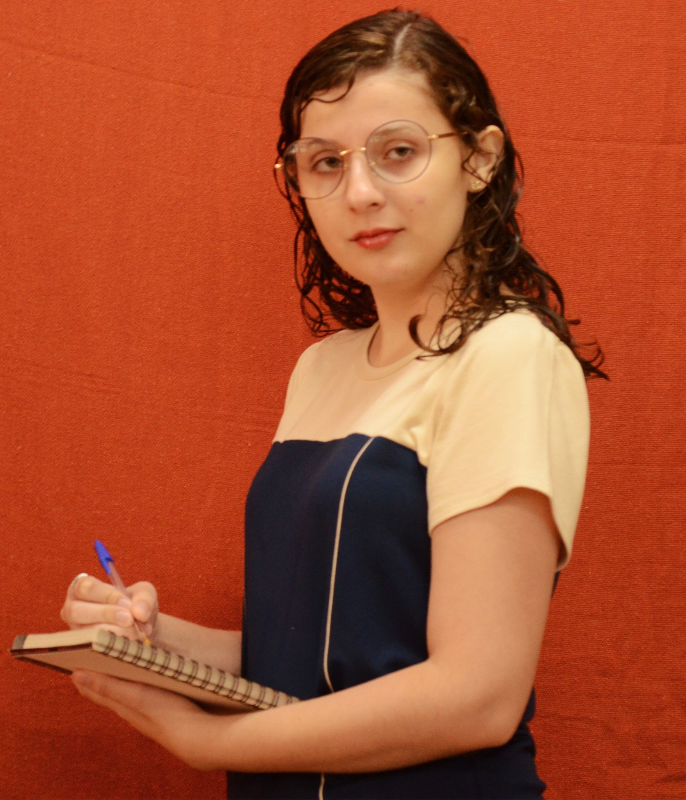
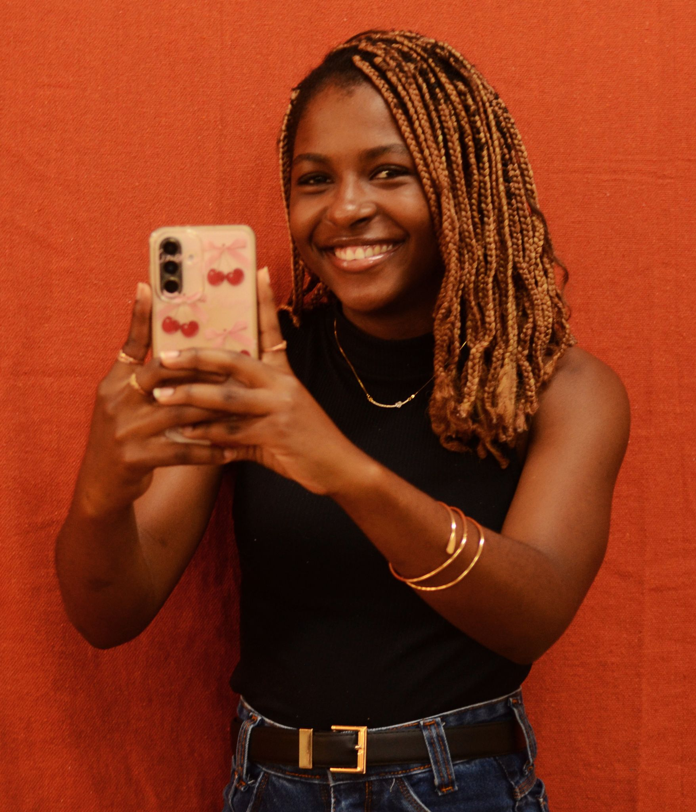
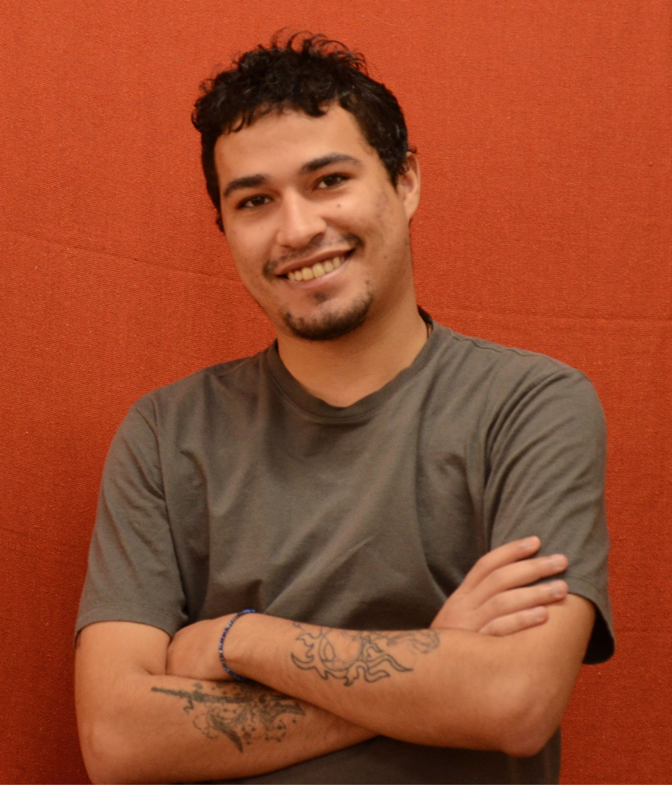
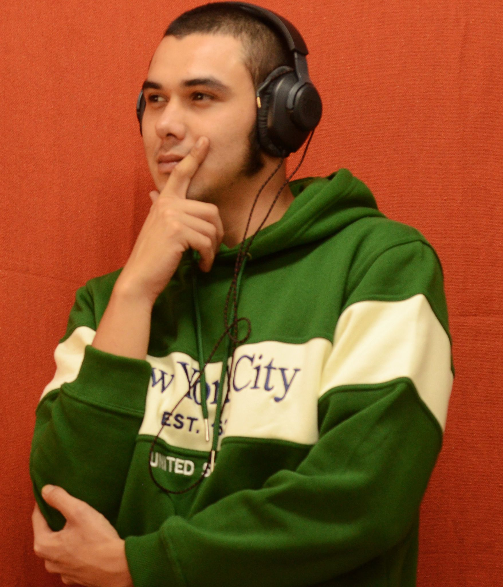

EsperaLar


Maria Eduarda Santos tem 21 anos e está na sétima fase do curso. Escolheu o jornalismo porque queria trabalhar com fórmula 1. Atualmente pretende atuar com jornalismo econômico e político. Adora escrever em diários, assistir anime, séries, e também gosta de ler e aprender novos idiomas. É tutora da gatinha Bibliotecária, que se chama assim porque vivia na biblioteca da UFMS e foi adotada através do “Proteção Felina da UFMS”. No projeto foi responsável pela produção do site e o design final das artes e em alguns momentos, também produziu fotos dos bastidores.

Paloma Maldonado Rainho tem 19 anos e é a caçulinha da turma. Escolheu o jornalismo por influência do professor de literatura do ensino médio. É uma menina que tem muitos hobbys. Gosta de ler livros de terror, de suspense, de mistérios, histórias em quadrinhos e mangás, assistir anime, ouvir música, jogar videogames e desenhar. É tutora da Moana, uma cachorrinha que tem 10 anos. Sua paixão por bichos, a levou a sugerir a temática sobre adoção animal, que foi escolhido e abraçado por todos. Criou a identidade visual do projeto, o infográfico e também a história em quadrinhos do EsperaLar.

Vitória Santos tem 21 anos. É uma jovem comunicativa e engajada nos temas de interesse social. No jornalismo se apaixonou pelas possibilidades que a profissão propicia, de ir até as pessoas e de dar visibilidade a suas histórias. No futuro pretende produzir um jornalismo que agregue valor a sociedade e se vê produzindo pautas que não seriam contadas. Tem como hobby séries, filmes, doramas, ouvir músicas, curtir a família e tomar o tradicional tererê. Assumiu a função de produção de conteúdos para as redes sociais, da produção gráfica, além das fotografias do projeto.

Theoangelo Cruz tem 22 anos. Entrou no jornalismo por gostar de escrever e por ser fã de literatura. Curte cinema, música e jogar videogames. É tutor de duas cachorras e tem com elas boas memórias. No projeto foi responsável pela captação de vídeo das entrevistas e pela reportagem hipermídia.

Pedro Luiz Vidal Amaral tem 25 anos. É um rapaz espontâneo e tem como hobby desenhar, tocar guitarra e compor. Talvez pela proximidade com a música, se enxerga no jornalismo, entrevistando artistas e atuando nessa área. Durante o desenvolvimento do projeto transmídia, se jogou de corpo e alma. Buscou fontes, participou das entrevistas, registrou os bastidores das gravações, e por fim editou a produção audiovisual do EsperaLar.